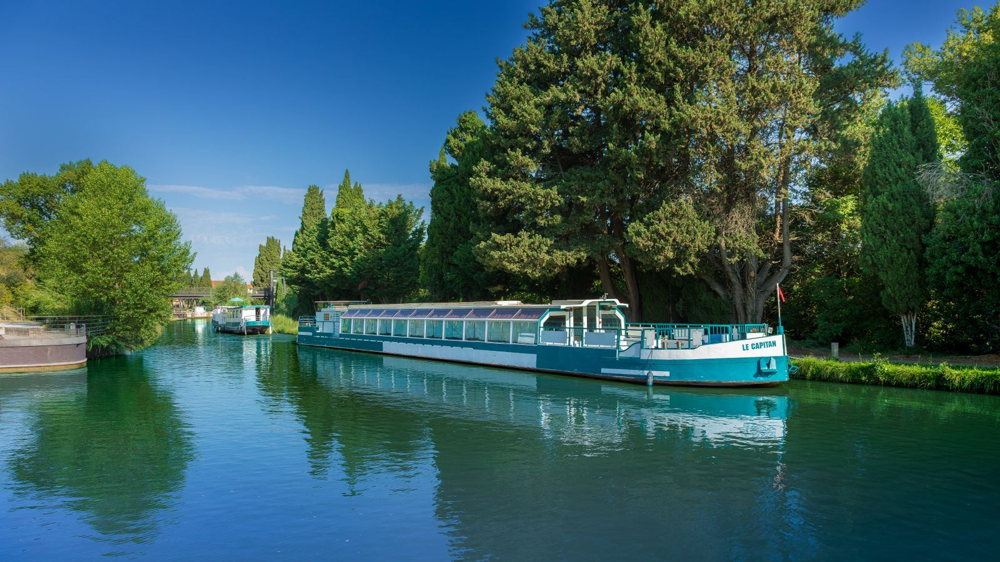

Vendre à Béziers
Estimation fondée sur les ventes récentes du quartier, mise en valeur du bien, visites et accompagnement jusqu'à la signature chez le notaire.
Nous contacterVendre, acheter, louer ou confier la gestion d'un bien à Béziers : l'agence LOTIER Immobilier a son siège rue Française et accompagne propriétaires, acquéreurs, locataires et copropriétaires.
Siège de l'agence : 40 rue Française, 34500 Béziers
 Béziers
BéziersBéziers est l'une des plus anciennes villes de France, posée sur l'Orb, face à la mer et aux vignobles. Son patrimoine (cathédrale Saint-Nazaire, Pont Vieux, canal du Midi) et son cadre de vie attirent autant les familles que les investisseurs et les acheteurs de résidences secondaires.
L'agence LOTIER Immobilier est installée à Béziers depuis sa création en 2018. Nos conseillers connaissent les rues, les copropriétés et les secteurs de la ville, ce qui permet d'estimer un bien au plus juste et de présenter les logements qui correspondent vraiment à votre projet.

Estimation fondée sur les ventes récentes du quartier, mise en valeur du bien, visites et accompagnement jusqu'à la signature chez le notaire.
Nous contacterRecherche du locataire, rédaction du bail, état des lieux, suivi des loyers : une gestion locative à partir de 39,99 € par mois.
Nous contacterGestion de copropriété : assemblées générales, budget, charges, entretien et suivi des travaux de votre immeuble.
Nous contacterAutour de la cathédrale Saint-Nazaire : appartements de caractère, ruelles, commerces et vie de quartier.
La grande promenade arborée du centre-ville, entourée de cafés et d'immeubles bourgeois.
Un jardin public et un quartier résidentiel apprécié, proche du centre.
Les abords du canal, ses écluses de Fonséranes et ses promenades en bord d'eau.
Maisons avec jardin, accès rapide à l'autoroute et à la mer (Valras-Plage, Sérignan, Cap d'Agde).
Quartiers, canal du Midi, proximité de la mer, transports : ce qu'il faut savoir avant d'acheter ou de louer à Béziers.
Lire l'articleDonnez-nous quelques informations sur votre bien : un conseiller se déplace ensuite pour affiner la valeur. Contactez l'agence pour convenir d'un rendez-vous.
La ville bénéficie d'un patrimoine fort, de la proximité de la mer et d'un marché locatif varié : étudiants, actifs, familles. Le choix du quartier et du type de bien dépend de votre objectif : un conseiller local peut vous aider à comparer.
Oui, LOTIER Immobilier assure la gestion de copropriétés : assemblées générales, budget, charges et suivi des travaux.
Le siège de l'agence est situé au 40 rue Française, 34500 Béziers. Vous pouvez aussi nous joindre au 04 67 11 28 31.
Oui. Nos conseillers couvrent aussi les communes voisines, de Béziers à Avignon : Montpellier, Nîmes, Narbonne, Carcassonne et leurs environs.
Un conseiller compare votre bien aux ventes récentes de son secteur et vous explique le prix du marché.
Ou appelez-nous : 04 67 11 28 31
Valras-Plage · Sérignan · Cap d'Agde · Narbonne · Montpellier
Contact : 04 67 11 28 31 · contact@lotier-immobilier.com
Siège : 40 rue Française, 34500 Béziers